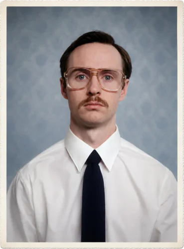
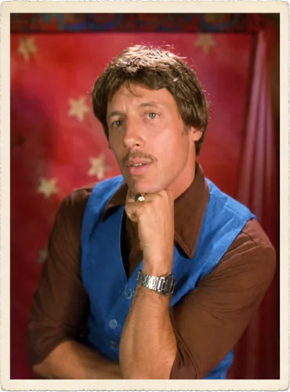
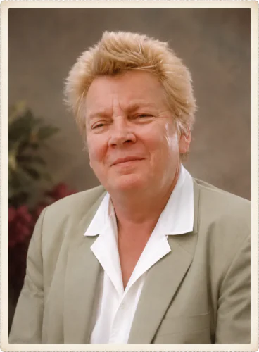
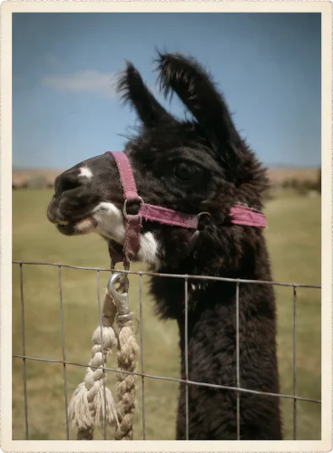

Rodina
Kip

Starší bratr Napoleona, celým jménem Kipland Ronald Dynamite, žije s Napoleonem a babičou v Prestonu v Idahu. Mezi jeho záliby patří na prvním místě technologie. Kromě technologie se věnuje také chatováním na internetu s "babes" a trénováním na bojovníka v kleci. Svoje zkušenosti bojovníka předává i svému mladšímu bratrovi, Napoleonovi. Spolu se strýcem Ricem prodává kvalitní misky z nylon polymeru.

Uncle Rico
Rico Dynamite, Napoleonův a Kipův strýc, žije ve svojí dodávce. Na střední škole byl Rico fotbalová hvězda a dodnes je přesvědčený, že mohl a měl být slavný, nebýt té špatné okolnosti. Rád se natáčí při házení míče a háže steaky. Svůj problém se rozhodl vyřešit pomocí stroje času. K jeho velké smůle je ale rozbitý, o čemž se přesvědčil i sám Napoleon.

Babička
Energická, drsná seniorka, která to v životě ještě nehodlá zabalit. Její kulinářskou specialitou jsou steaky. Ráda brázdí písečné duny na buggyně, občas se ale vydá i na návštěvu do Oklahomy.
La Fawnduh
Šmrncovní Napoleonova švagrová s pískově blond vlasy, se zálibou v pánských špercích. Obvylke u sebe mívá alespoň jednu kazetu s hudbou svého bratrance.

Tina
Mazlíček babičky, kterou Napoleon krmí zapečenými zbytky, pravděpodobně rizotem.